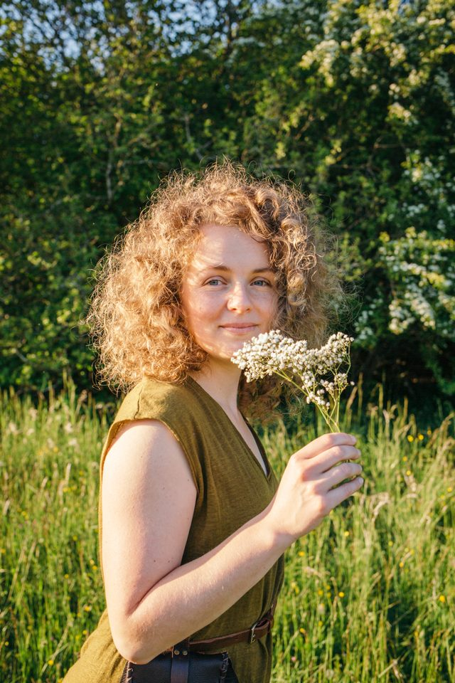
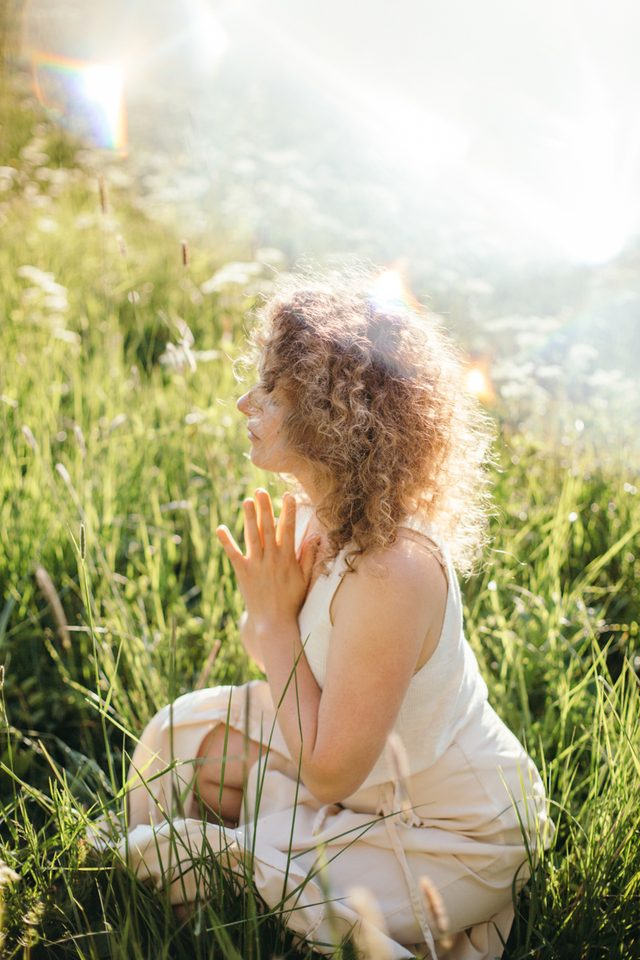

Ich wandle auf den Pfaden einer Erdhüterin.
Im Kontakt mit naturverbundenen Menschen aus Mitteleuropa und mit indigenen Kulturen in Guatemala, Mexiko, Indien und Australien durfte ich erfahren, welche Ebenen des Seins uns in den westlichen Kulturen verborgen sind. In mir begann ein Traum zu wachsen: Wie wäre es, wenn wir wieder lernen könnten, in unserer eigenen Landschaft einheimisch zu sein?

„Wir haben vergessen, dass wir Verantwortung für diese Erde und ihre Lebewesen tragen.“
Erdhüterin zu sein ist meine Form von Aktivismus
Mein Wirken wird getragen von meiner Verbindung zu den Pflanzen, der Erde, den Tieren, den Elementen und allem, was ist. Meine Form von Aktivismus ist es, Menschen daran zu erinnern, dass sie ein wichtiger Teil dieser Erde sind.
Angetrieben bin ich von der Suche nach den Wurzeln eines zeitgemäßen, authentischen Einheimisch-Seins. Tief in der Landschaft schlummern Lieder, Rituale und Feste, die uns von einer Beziehung mit allem, was ist, erzählen. In meinem Tun verknüpfe ich wissenschaftliche Hintergründe mit alltagsnahem Handeln und meiner Intuition.
Mein großes Herzensanliegen ist es, dich wieder an deine Verbindungen mit der Landschaft, den Elementen, Tieren, Pflanzen und Himmeln zu erinnern. Ich bin hier, um dich in das Fühlen des Lebensnetzwerks zu begleiten. Du bist gebraucht. Du trägst einzigartige Gaben in dir. Dein Leben schlägt weite Wellen.

Wissenschaft und Intuition, Hand in Hand
Über ein Jahrzehnt Ausbildung — von der Landschaftsarchitektur bis zur naturverbundenen Ritualarbeit.
Montessori-Diplom-Ausbildung
Pädagogik, die vom Kind und seiner Beziehung zur Welt ausgeht.
Naturverbundene Ritualarbeit — Circlewise
Jahreskreisfeste, Rituale und die Kunst, Menschen durch die Zeit zu begleiten.
Heilpflanzenkunde & Assistenz — Jasmina Himmel
Vertiefung des Pflanzenwissens und der praktischen Kräuterheilkunde.
Heilpflanzenkunde — Susanne Fischer-Rizzi
Bei einer der prägendsten Stimmen der europäischen Kräuterkunde.
Wildnis- & Natur-Kulturpädagogin — Circlewise
Naturverbindung vermitteln und Gruppen in der Wildnis führen.
Yogalehrerin RYT 200 — Trimurti Yoga, Dharamshala
Körperarbeit und Atem als Wege nach innen.
Staatlich zertifizierte Waldpädagogin
Den Wald als Lern- und Erfahrungsraum erschließen.
B.Sc. Landschaftsarchitektur & -planung — TU München
Das wissenschaftliche Fundament: Landschaften lesen und gestalten.
Spürst du den Ruf?
Wenn etwas in dir bei diesen Worten aufhorcht, dann lass uns in Kontakt kommen. Es gibt keinen falschen Anfang.